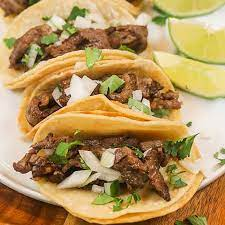

Tacos

These classic Ground Beef Tacos feature homemade taco meat
loaded into freshly fried taco shells. Serve up with all your favorite
toppings for an easy family meal that takes less than 30 minutes!
Ingredients
- Ground Beef
- Pepper
- Tomato Sauce
- Salt
- Onion Powder
- Oil
- Corn Tortillas
Steps
- Cook ground beef until it is completely brown.
- Allow taco meat to simmer briefly in sauce for flavor.
- Fry corn tortillas in light oil.
- Fill taco shells with cooked beef.